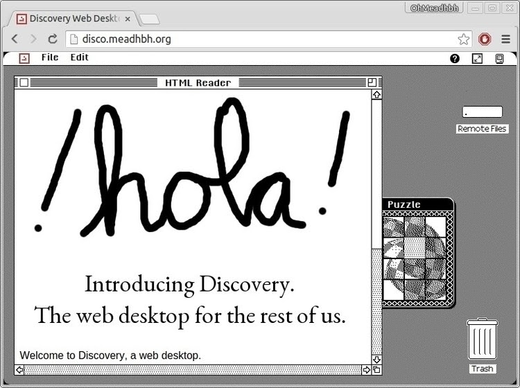

In the middle of making the UI for an embedded thingamabob that pretends to be a nuclear power plant control pane (of course I'm making a Web-based UI) and was thinking… Why not re-use the Disco Interface?

Disco is an HTML homage to old Macintoshes I cooked up a couple years ago; mostly to prove it could be done, but also to serve as the user interface for a different product. I'm just curious though... is this the kind of thing that would make you run screaming?
Disco started with a few UI mockups I threw together, trying to demonstrate concepts for desktop applications. It turned out I knew HTML + CSS + JavaScript much better than I knew how to throw together a decent desktop application.
Disco is free as in beer software, though it's not supported. Some day I'll make a successor to Disco. In the mean-you're certainly welcome to fork it and do something interesting with it. You can find the code at https://github.com/OhMeadhbh/disco.